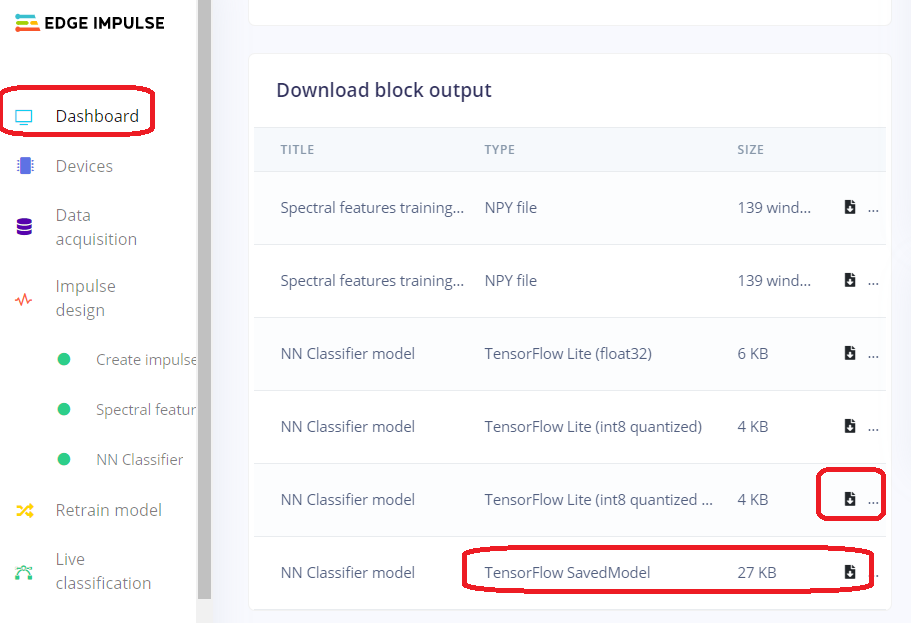

Blog: Jeremy Ellis aka @Rocksetta About Edge Impulse Group Data Collection
Sharing of your Edge impulse projects live to other people needs a Pro paid account.
Talk to them about your situation Contact Edge Impulse.
I am a Canadian Teacher who trys to simplify complex tech for my classroom and for my after school group with
www.gearbots.org
See my website at https://www.rocksetta.com/ for lots more links.
High School Group Data Collection of Acceleration Data using the students cell phones and a Nano 33 Ble Sense Arduino
So this is what my after school group experienced while using the Edge Impulse piad account that allows group sharing and data collection of
an Impulse.
Since my entire after school group is online, this ability to work together training a neural network was a great experience. Since I had never used the
live interacting feature before it was also a learning experience for me.
- Load EdgeImpulse.com I like to load both the Forum and Doc into their own tab before I login in,
so I can reference them.
- In Edge Impulse pull down your login name and select an Impulse or make a new one.

- Get used to the "Dashboard", lots, but not everything happens here.

At the bottom of the "Dashboard" you can delete the Impulse, but more importently be able to delete all the data if you quickly want to start again.

Also note that at the bottom of the "Dashboard" when your Impulse is complete you will be able to find data downloads and Machine Learning Model downloads
in various types of compression (Quantization)
Again note that, if it is not on the "Dashboard" it will be on the left side-bar. We spend a lot of time using that side-bar to switch back and forth from important zones.

- Now start uploading data by either connecting your Arduino. See instructions
or a choice that is much faster for acceleration, sounds or images is to use your cell phone.
You could also use your laptop or desktop computer for the sounds or images but be warned for images the cell phone is much easier to position the camera than
working with your laptop.
Connecting your device.
Choose a device

See it activate on your phone. (The default says Image Collection)

This part is important for defining Images (The Default), Sounds or the Accelerometer sensor. A few things to note are the Label.
It can be changed later but it is best to remember to change the label BEFORE taking a measurement.
Also note the duration. This is a bit confusing, we chose to take 3 second samples as that made the most sense for our experiment, You can take up to 10 second samples
and let edge impulse afterwards seperate all the individual samples (All with the same label). We chose not to do that method for this set of data.

- As the students and I got better at data collection I suggested that we try to get similar amounts of data.
One of my students noticed this pie chart that when you mouse over gives you information about that label. This made it very easier for the group
to monitor each other "live" while we were collecting data. Students that finished there label early started naturally helping other students that werre having\
a hard time.

- Reminder you can let Edge Impulse auto split your data into Train and Test, but we had only 2 student with Nano 33 Ble Sense Arduinos so we had them enter
the test data, while the rest of us used our cell phones to train the Neural Network..

- Then I had one of the best teachable moments of my life! We looked at the Train (Cell Phone) and Test (Nano33BleSense) data. And it did not make sense.
I have taught Technology for over 30 years, and one thing I love is when I can't do something. In fact in my actual classroom, teaching the teacher how to do
something is one of the few methods my students have to get 100% on an assignment (They still have to do the assignment, they just get 9/9 instead of 8/9)
Another day, ask me why I mark out of 9 and not 10.
So I was stumped and the students had to solve the mess. They eventually started to look at the data and slowly one at a time solved the issues.
1. The Z axis was affected by gravity, but not all cell phones had this the same (or students were just holding it wrong).
2. If you held the Nano33BleSense upright with the USB cable pointing towards you, you had to hold the cell phone upright but twisted 90 degrees clockwise.
These 2 points seem easy when told to you, but for a group of students to figure it out was a pleasure to watch.
Here ia an image showing data where the Z axis was obviously collected incorrectly as it has negative values, meaning the device was upside-down
(or collecting data reversed)

Then I had one of my funniest tech experiences. We found out that some students labelled data as "unknown" and someone else had labelled data as "unknowns"
I think some one else had used small letters and another one large letters, anyway the students found the multi-select tool and fixed the problem. And now every
item was labelled Capital "O" After a moment of horror, we realized that eeach mesurement had an original file name and as a group we started renameing labels
back to how they should be named.

These images will be used when I have written about them: